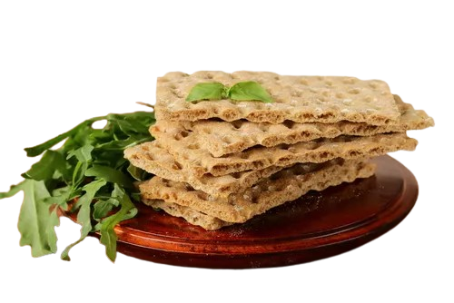

Como consejo general se habla de la conveniencia de que la mayor parte de la población aumente su consumo diario de fibra. Un buen recurso para conseguirlo y, además, obtener los múltiples beneficios de los alimentos integrales, es comenzar o aumentar el consumo de cereales integrales de grano entero, hasta alcanzar las 2-3 raciones diarias. Un ejemplo: tomar pan integral en comida y cena y pasta integral al mediodía. Otro ejemplo: tostadas integrales en el desayuno, arroz integral acompañando a la legumbre del mediodía, y bizcocho elaborado con harina integral como postre. Sin embargo, ante determinadas situaciones es mejor no llegar a este nivel. Procesos de malabsorción, desnutriciones importantes, diarreas crónicas, y operaciones de reducción de estómago, entre otras, aconsejan no tomar fibra en elevada cantidad. La introducción de los cereales integrales en la dieta debe hacerse de manera gradual y progresiva, ya que un aumento brusco ante un intestino no preparado puede desencadenar dolor intestinal, flatulencias, distensión abdominal, retraso en la digestión y episodios diarreicos. Esto es un proceso que lleva cierto tiempo de adaptación. Un último consejo culinario para quien no esté habituado a tomar cereal integral. El paladar ha de acostumbrarse a estas nuevas texturas, que muchas veces nos resultan algo agresivas. Para solventar las comparaciones con los refinados, un recurso útil es poner en remojo los cereales integrales antes de cocinarlos y su aceptación seguro que mejorará. Si vamos a tomar quinoa como primer plato, la pondremos en remojo unas horas antes para que se ablande y su cocción sea más reducida y efectiva.
